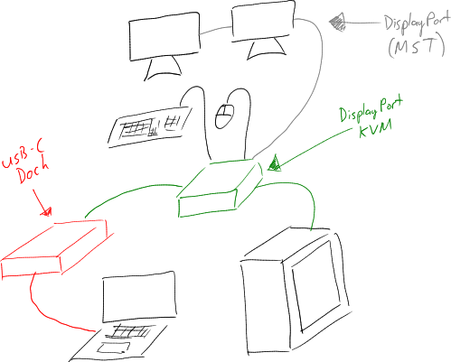
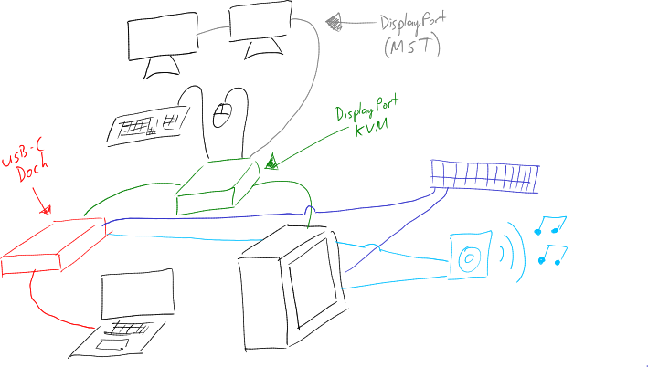

November was the month of spending for me. From preparing Christmas gifts, to being too eager and impatient to wait for Black Friday / Cyber Monday sales (But do they even happen down here in Australia???).
2x Mi Band 4 smart watches
1x Shure SE215 earphones
1x Knowledge Zenith ZS10 Pro earphones
2x Logitech Spotlight wireless clickers
2x Satechi Type-C 75W Travel Charger
1x Canon EF 35mm f/2 IS USM camera lens
1x Dell WD15 USB-C Business Dock
1x ATEN CS782DP DisplayPort KVM
In anticipation for Cyber Monday, I had started to look and prepare for a new computer build - but after a few unforeseen turn of events, I had decided to delay those purchases, and opt for buying a collection of other things.
One of these things included buying some equipment to connect my laptop (Dell Latitude 7390) to my multi-monitor displays at home.
Previously, I had been connecting my laptop to a USB-C PD + Gigabit Ethernet dongle, then using either Synergy or TeamViewer. Whilst both great products, I did wish that I could get the responsiveness from physical interaction. And also that I don’t have that much space to ‘dock’ my laptop.
Well not any more.
To actualise my idea, I opted for a USB-C Dock and DisplayPort KVM solution.

USB-C Dock - I want to have one cable, which can charge my laptop, extend the video signal, and also carry a gigabit network connection. USB-C was clearly the choice here, with its Power Delivery standards.
I decided upon the Dell WD15 USB-C Business Dock, as I had found a good deal for AUD $89 - what a steal!
DisplayPort KVM - As DisplayPort MST exists, I would be able to connect just one cable from my laptop, and daisy-chain DisplayPort MST-compatible displays together to get an extended display.
I decided upon the ATEN CS782DP DisplayPort KVM as it had good reviews and, whilst pricey, had support for the MST feature I needed for multi-displays
Though I could have saved money on the dock and opted for a USB-C KVM, I found this dock + KVM combo a better choice, as I needed both devices to maintain a network connection, and that both devices would be able to output an audio signal into my audio matrix.
